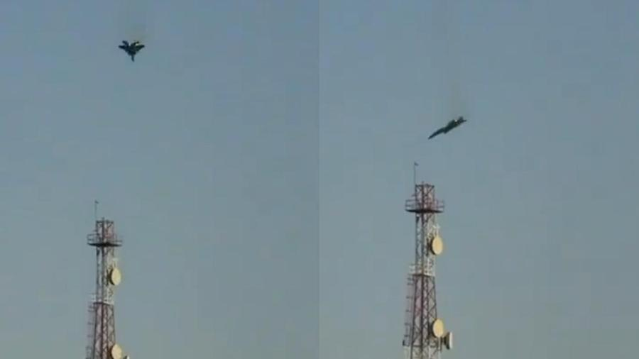

Últimas Notícias do Momento:
- Notícia 01
- Notícia 02
- Notícia 03
Jatos dos EUA que caíram no Kuwait foram abatidos por engano por defesas.
02/03/2026 05h10

O que aconteceu:
- Aeronaves americanas caíram perto da base aérea de Ali Al Salem Air, segundo comunicado do Ministério da Defesa. Segundo o aviso, assinado pelo coronel
Said Al-Atwan, porta-voz do órgão, operações de busca e resgate são feitas no local, mas todos teriam sobrevivido. - Pouco tempo depois, o Exército dos EUA informou que os caças F-15 foram abatidos por engano pelas defesas aéreas do Kuwait. Os militares faziam operações
relacionadas ao Irã usando a base americana no Kuwait, um parceiro estratégico das autoridades americanas no Oriente Médio. - Seis tripulantes ejetaram-se de paraquedas. Eles teriam sido resgatados em segurança e estão em condição estável. Equipes médicas foram enviadas aos locais dos acidentes.
| Categria | Autor |
|---|---|
| Guerra | OUL |
Voltar
Palmeiras 2 x 1 São Paulo: confira os gols do jogo na narração de Cléber Machado
01/03/2026 - 22h38
O que aconteceu:
- Foi o Palmeiras que se deu melhor no Choque-Rei pelas semifinais do Paulistão de 2026. A equipe de Abel Ferreira pressionou o São Paulo
e venceu por 2 a 1, com gols de Maurício e Flaco López em bonitas jogadas do time alviverde. O tricolor diminuiu com Calleri, em um pênalti
polêmico marcado na Arena Barueri. Além de toda a emoção de um clássico, a partida também teve muita reclamação de arbitragem, com penalidade
muito reclamada por Hernán Crespo e expulsão no banco de reservas. Confira os gols do jogo pela transmissão da RECORD e narração de Cléber Machado.
| Categria | Autor |
|---|---|
| Esportes | Cléber Machado |
Voltar
Comissões da Câmara aprovam homenagem a líder do estudo sobre polilaminina
03/03/26 às 15:41
O que aconteceu:
- Duas comissões da Câmara dos Deputados aprovaram moções de homenagem à cientista Tatiana Coelho de Sampaio, destacando sua
contribuição científica no desenvolvimento da polilaminina para tratamento de lesões medulares. - A polilaminina, proteína derivada da placenta humana, vem sendo estudada há 25 anos pela UFRJ e mostrou resultados promissores em
pacientes com lesões recentes na medula, funcionando como uma ponte biológica para reconectar neurônios. - Em janeiro, a Anvisa autorizou o início dos estudos clínicos para avaliar a segurança da polilaminina, considerada pela pesquisadora
uma alternativa mais acessível e segura em comparação às células-tronco.
| Categoria | Autor |
|---|---|
| Política | Manoela Carlucci e Leticia Martins |
Voltar